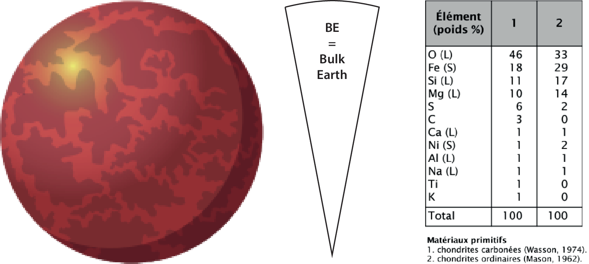
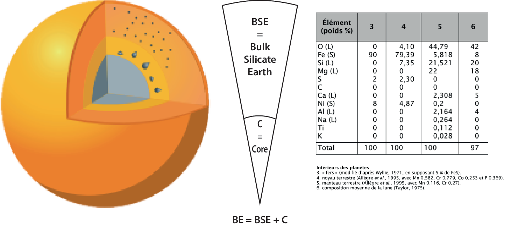
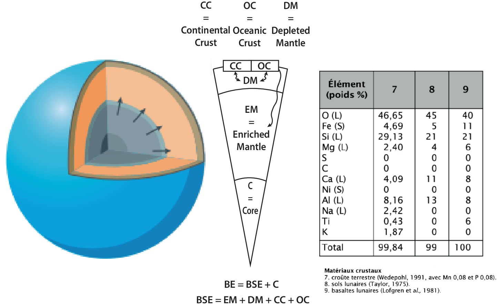
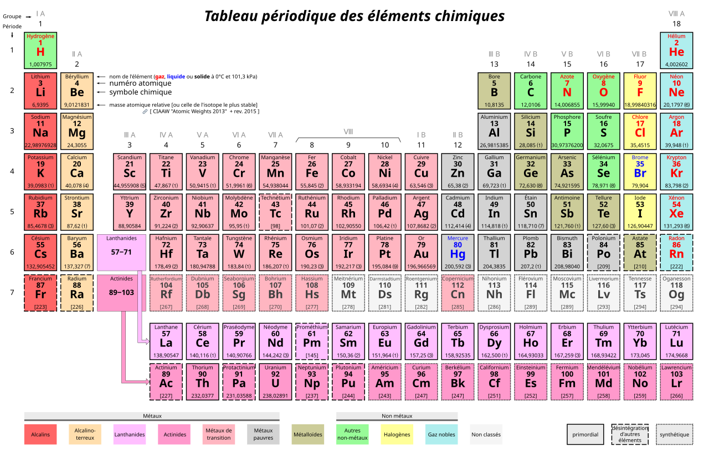
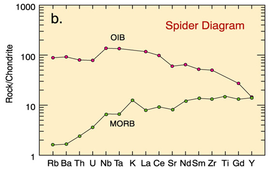
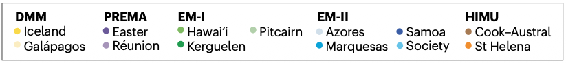

Séance 4 - La naissance des magmas I : nature des roches sources
Plan du cours
| Temps | Contenu | Objectif |
|---|---|---|
| 0–40 min | Les différentes sources mantelliques | Comprendre pourquoi le manteau est géochimiquement hétérogène |
| 40–45 min | Questions générales | |
| 45–60 min | Pause | |
| 60–100 min | Les différentes roches magmatiques issues des hétérogénéités du manteau | Lier les roches magmatiques aux différentes sources existantes et à la géodynamique terrestre |
| 100–105 min | Questions générales |
Notion de source des magmas
Rappel sur les processus de naissance et de maturation des magmas
Source mantellique → Fusion partielle → Magma primaire → Transport et évolution du magma → Roche magmatique
La compréhension des magmas commence par l’identification des sources et des processus qui les ont modifiées.
Rappel fondamental sur le processus de fusion des roches sources
Roche source → Liquide magmatique extrait + Résidu solide
- Le liquide ne représente qu’une fraction de la source (taux de fusion généralement de quelques pour cent).
- Les éléments compatibles restent préférentiellement dans les minéraux du résidu.
- Les éléments incompatibles passent préférentiellement dans le liquide.
- Le résidu et le liquide n’ont donc plus la même composition.
Hétérogénéité du manteau
La nature géochimique du manteau est hétérogène en raison de l’évolution de la Terre : les éléments chimiques, notamment les éléments traces et les isotopes, ne sont pas répartis partout de la même manière.
L’importance de l’évolution de la Terre : la Terre globale
Bulk Earth (BE) – Terre globale

Composition théorique de la Terre globale
La Terre globale (BE pour Bulk Earth) correspond à la composition moyenne de l’ensemble de la planète, avant de distinguer le noyau, le manteau et les différentes croûtes.
Elle constitue le point de départ pour comprendre la différenciation chimique de la Terre. Les matériaux primitifs, notamment les chondrites, servent de références pour estimer cette composition globale.
L’importance de l’évolution de la Terre : la Terre globale silicatée
Bulk Silicate Earth (BSE) – Terre silicatée globale

Composition théorique de la Terre silicatée globale
La Terre globale silicatée (BSE pour Bulk Silicate Earth) correspond à la composition moyenne de l’ensemble des silicates de la planète, après la formation du noyau de fer, mais avant la naissance de la première croûte.
Aujourd’hui, ce réservoir pur n’existe presque plus, mais de rares poches profondes préservées dans le manteau inférieur se rapprochent de cette composition. Il est donc utilisé comme référence pour comprendre la différenciation chimique de la Terre silicatée et l’évolution des réservoirs mantelliques.
L’importance de l’évolution de la Terre : cristallisation de l’océan magmatique
Manteau appauvri (DM) et manteau enrichi (EM)

Le point de bascule : formation des croûtes continentales et océaniques qui segmentent la composition du manteau
Le refroidissement de l’océan magmatique primitif terrestre a formé un manteau initialement fertile et homogène, mais qui a été progressivement vidé de ses éléments incompatibles par la formation de la croûte continentale et océanique.
Le manteau supérieur résiduel est désormais appauvri en éléments incompatibles, tandis que les croûtes en sont enrichies.
On observe donc actuellement un manteau supérieur appauvri (DM) par rapport à la BSE.
L’importance de l’évolution de la Terre : interactions entre ces différents réservoirs
L’impact de la géodynamique terrestre et de la tectonique des plaques
- La délamination de la croûte continentale peut se produire lors des collisions.
- La tectonique des plaques provoque le recyclage en profondeur des plaques lors de la subduction.
- Il en résulte un recyclage limité de la croûte continentale au sein du manteau supérieur appauvri (DM).
- La subduction constante et volumineuse des croûtes océaniques enrichit certaines régions du manteau, ce qui contribue à former un manteau enrichi (EM) par rapport à la BSE.
- Le DM et l’EM représentent deux pôles importants de la composition du manteau terrestre actuel.
- Cependant, l’ensemble de ces processus ne se limite pas au manteau supérieur et au manteau inférieur. La convection mantellique globale mélange les matériaux et produit des hétérogénéités à toutes les échelles, selon un modèle de type « marble cake ».
Hétérogénéité visible par la géophysique
Flux de remontée mantellique estimés
Les anomalies des vitesses sismiques peuvent être mesurées en profondeur et intégrées sur une carte en surface. Elles révèlent des zones préférentiellement ductiles, où les ondes sismiques sont ralenties, ce qui peut indiquer des remontées mantelliques plus chaudes au sein d’un manteau environnant plus froid.

Hétérogénéité visible par la géophysique
Flux de remontée mantellique estimés
Les anomalies de vitesse sismique peuvent être interprétées comme des panaches ascendants chauds (anomalies négatives de vitesse), ou comme des croûtes plongeantes froides (anomalies positives de vitesse), en cohérence avec la géodynamique terrestre et la tectonique des plaques.

Les éléments chimiques d’une roche : classification
Éléments majeurs, éléments traces, terres rares (REE pour Rare Earth Elements) et isotopes
- Éléments majeurs : Ce sont les éléments chimiques les plus abondants, représentant chacun plus de 0,1 % de la masse totale d’une roche (généralement Si, Ti, Al, Fe, Mg, Ca, Na, K, P).
- Éléments traces : Ce sont les éléments présents en très faible quantité, représentant moins de 0,1 % de la masse totale d’une roche. Bien que discrets, ils sont de précieux indicateurs pour retracer l’histoire géologique ou l’origine d’un matériau (Rb, Sr, Ba, Cs, Zr, Hf, Nb, Ta, Th, U, etc.).
- REE : Il s’agit d’un groupe spécifique de 17 éléments chimiques aux propriétés très voisines, comprenant les 15 lanthanides, du lanthane (La) au lutétium (Lu), ainsi que l’yttrium (Y) et le scandium (Sc).
- Isotopes : Un isotope est une variante d’un élément chimique qui possède le même nombre de protons, mais un nombre différent de neutrons. On distingue les isotopes stables, qui ne se désintègrent pas au cours du temps, et les isotopes radioactifs, dont la demi-vie permet notamment de dater des roches et des minéraux (par exemple, 40K–40Ar, 87Rb–87Sr, 238U–206Pb).
- Les traces et isotopes sont des outils géochimiques puissants pour remonter à la source des magmas.
- Les rapports isotopiques sont de bons traceurs de source pour les magmas, car la fusion partielle modifie généralement peu les rapports isotopiques des systèmes concernés.
Les éléments chimiques d’une roche : en détail
Tableau périodique des éléments

Les éléments chimiques d’une roche : comptabilité et incompatibilité
Les éléments majeurs
Compatibles : par exemple le Mg et, selon le minéral, le Fe. Ils intègrent facilement les premiers minéraux qui cristallisent, notamment l’olivine et les pyroxènes.
Incompatibles : le Na et le K, qui préfèrent généralement rester dans le liquide résiduel jusqu’aux stades tardifs de la cristallisation.
Les éléments traces hors REE
Compatibles : le Cr, le Ni et le Co. Ils entrent facilement dans l’olivine et certains oxydes, comme la chromite.
Incompatibles : ils sont souvent classés en deux sous-groupes :
LILE (Large-Ion Lithophile Elements) : le Rb, le Sr et le Ba, qui ont une faible charge et un grand rayon ionique.
HFSE (High-Field-Strength Elements) : le Zr, le Th et le Nb, qui ont une charge élevée et un petit rayon ionique. Ces éléments sont difficiles à intégrer dans les minéraux courants et restent donc préférentiellement dans le liquide résiduel.
Les éléments chimiques d’une roche : comptabilité et incompatibilité
Les terres rares (REE pour Rare Earth Elements)
Les terres rares sont globalement incompatibles, mais leur comportement varie le long de la série :
Très incompatibles : terres rares légères (LREE pour Light Rare Earth Elements), du La au Sm. Leur rayon ionique relativement grand les rend difficiles à intégrer dans les réseaux cristallins courants.
Moins incompatibles, voire compatibles : terres rares lourdes (HREE pour Heavy Rare Earth Elements), du Gd au Lu. Leurs rayons ioniques plus petits leur permettent de s’insérer plus facilement dans certains minéraux, notamment le grenat.
Rappel fondamental sur le coefficient de partage D
Le comportement d’un élément chimique lors de la fusion ou de la cristallisation d’une roche dépend de son coefficient de partage solide–liquide, \(D\) : \(D = C_{\text{solide}} / C_{\text{liquide}}\), où \(C\) désigne la concentration de l’élément considéré.
- Éléments compatibles : \(D > 1\) ; ils s’intègrent facilement dans les cristaux.
- Éléments incompatibles : \(D < 1\) ; ils se concentrent dans le liquide.
Les éléments chimiques d’une roche : comptabilité et incompatibilité
Exemple de représentation : diagramme multiélémentaire (« spider diagram »)
- Il s’agit d’un spectre multi-élémentaire représentant les concentrations en éléments traces, dont les REE, normalisées par rapport à un réservoir de référence, souvent la chondrite. Les éléments sont disposés de gauche à droite selon leur compatibilité croissante.

Pourquoi les éléments incompatibles varient-ils beaucoup entre deux types de roches ?
La nature de la source et le taux de fusion peuvent varier. Les éléments incompatibles étant préférentiellement concentrés dans le liquide, leur abondance amplifie fortement ces différences.
Les éléments incompatibles sont très sensibles à ces deux facteurs.
Pourquoi les éléments compatibles varient-ils moins ?
L’effet tampon du manteau solide limite au contraire les variations des éléments compatibles : même si les sources et les taux de fusion diffèrent, leur concentration dans le liquide produit reste souvent relativement stable.
Le « zoo » du manteau : complexité géochimique
Les outils géochimiques pour cartographier le manteau
Les systèmes Sr–Nd–Pb–Hf enregistrent l’histoire des différents réservoirs mantelliques.
- Les éléments majeurs décrivent surtout l’évolution du magma (cf. séances 6 et 7).
- Les éléments traces et les isotopes sont particulièrement utiles pour contraindre la source.
Diagrammes isotopiques : Sr–Nd–Pb.


Identification des réservoirs mantelliques par les isotopes
Isotopes de Sr et Nd : ils séparent le manteau appauvri (DM) des influences crustales recyclées du manteau enrichi (EM-1 et EM-2).
Isotopes du Pb : permettent d’identifier le réservoir HIMU (issu de la subduction d’anciennes croûtes océaniques recyclées au sein du manteau profond).
Isotopes de Nd et Hf : ils permettent de distinguer EM-1 de EM-2, qui correspondent à des histoires de recyclage différentes.
Le « zoo » du manteau : les isotopes de Nd et Sr
Le graphique classique : 143Nd/144Nd vs. 87Sr/86Sr

À retenir
- DM, en haut à gauche : faible 87Sr/86Sr et fort 143Nd/144Nd, signature d’un manteau appauvri.
- EM-1 et EM-2, plus bas et vers la droite : signatures enrichies liées à des domaines crustaux recyclés. EM-2 se distingue notamment par un rapport de Sr élevé.
- Les alignements entre ces pôles isotopiques traduisent des mélanges entre différents domaines du manteau, avec des compositions intermédiaires comme PREMA ou FOZO.
Le « zoo » du manteau : les isotopes du Pb
Le graphique spécifique 208Pb/204Pb vs. 206Pb/204Pb

À retenir
- Les 206Pb et 208Pb radiogéniques enregistrent respectivement l’évolution des systèmes de désintégration radioactifs U–Pb et Th–Pb.
- DM (MORB), en bas à gauche, correspond aux compositions les moins radiogéniques du manteau appauvri.
- EM-1 et EM-2 occupent des domaines intermédiaires, représentatifs de sources enrichies par des matériaux crustaux recyclés.
- HIMU, en haut à droite, se reconnaît à ses rapports de Pb très radiogéniques, hérités d’un réservoir à fort rapport U/Pb ancien (recyclage d’anciennes croûtes océaniques).
Le « zoo » du manteau : les isotopes de Hf et Nd
Le graphique complémentaire 176Hf/177Hf vs. 143Nd/144Nd

À retenir
- DM, en haut à droite, présente les rapports isotopiques de Hf et de Nd les plus élevés : il s’agit d’un manteau durablement appauvri.
- EM-1 et EM-2 se situent vers le bas et la gauche, ce qui traduit des sources enrichies et recyclées. Leur position relative aide à distinguer leurs histoires de recyclage.
- HIMU se place sous l’alignement principal Hf–Nd. Cette position aide à identifier une contribution d’anciennes croûtes océaniques recyclées.
Les réservoirs majeurs actuels : le manteau supérieur appauvri
Depleted Mantle (DM) — manteau supérieur appauvri
Le DM est le résidu solide de fusions partielles répétées qui ont extrait des éléments incompatibles pour former les croûtes. Il présente de faibles rapports 87Sr/86Sr et 206Pb/204Pb, mais un rapport 143Nd/144Nd élevé.
Déjà réfractaire et pauvre en éléments incompatibles, il nécessite un taux de fusion important ou des conditions thermiques élevées pour produire de nouveaux magmas.
Représentation graphique des sources
Les réservoirs majeurs actuels : le manteau enrichi
Enriched Mantle (EM) — manteau enrichi
L’EM reçoit des sédiments et des fragments de croûte recyclés par subduction ou délamination. Ces matériaux concentrent les éléments incompatibles et peuvent abaisser la température de fusion du domaine source.
EM-1 est souvent associé à une lithosphère continentale ancienne ou à des sédiments pélagiques recyclés, tandis qu’EM-2 est davantage associé à des sédiments terrigènes. Leurs signatures isotopiques permettent de distinguer différentes histoires de recyclage.
Ces domaines enrichis peuvent être entraînés vers les zones de fusion par la convection mantellique.
Représentation graphique des sources
Les réservoirs majeurs actuels : le réservoir HIMU
Réservoir High-μ (HIMU), avec μ = 238U/204Pb
Le HIMU est généralement interprété comme une ancienne croûte océanique basaltique subduite, déshydratée puis isolée pendant une longue durée. Son rapport U/Pb élevé permet l’accumulation de plomb radiogénique.
Il se reconnaît notamment à un rapport 206Pb/204Pb très élevé et à un faible rapport 87Sr/86Sr. Les domaines pyroxénitiques issus de cette croûte recyclée peuvent être plus fusibles que la péridotite environnante.
Ces domaines peuvent être entraînés vers les zones de fusion par la convection mantellique.
Représentation graphique des sources
Les réservoirs majeurs actuels : les réservoirs communs et de mélange
Prevalent Mantle (PREMA) et Focus Zone (FOZO)
Ces termes désignent des compositions communes et intermédiaires entre le pôle appauvri DM et les pôles enrichis EM ou HIMU. Elles représentent un composant fréquent des mélanges mantelliques, observé dans de nombreux MORB et OIB, plutôt qu’un pôle isotopique extrême.
Représentation graphique des sources
La production de roches à partir des différentes sources mantelliques
Les roches magmatiques sont issues de sources mantelliques distinctes, avec des signatures géochimiques et isotopiques différentes
- N-MORB : basaltes de dorsale issus principalement du manteau appauvri (DM).
- E-MORB : basaltes de dorsale enrichis, issus d’un mélange entre le DM et des domaines enrichis (EM ou HIMU).
- OIB : basaltes de point chaud issus d’un manteau hétérogène, pouvant inclure des composantes EM-1, EM-2, HIMU, PREMA ou FOZO.
- IAB : basaltes et andésites d’arc issus d’un coin de manteau hydraté par la subduction ; ils contribuent à la construction de la croûte continentale (CC).
- Ne pas confondre les sources (DM, EM-1, EM-2, HIMU, PREMA et FOZO) avec les roches qui en résultent (N-MORB, E-MORB, OIB et IAB). Ces roches sont produites par fusion partielle, puis leur composition dépend aussi du taux de fusion, du mélange, de l’assimilation et de la cristallisation fractionnée.
- Les pôles isotopiques extrêmes sont rarement observés seuls dans les roches magmatiques. La plupart des magmas enregistrent un mélange entre plusieurs domaines mantelliques.
La production de roches : N-MORB
Normal Mid-Ocean Ridge Basalts (N-MORB)
Les N-MORB proviennent principalement du manteau appauvri (DM). Sous une dorsale, la remontée de l’asthénosphère entraîne une fusion par décompression adiabatique.
Le degré de fusion est relativement élevé et peut atteindre environ 10 à 30 % sous les dorsales rapides. Le liquide produit est donc pauvre en éléments incompatibles et présente généralement un spectre de terres rares appauvri en terres rares légères.
Cas extrême : l’EDMM et les boninites. L’EDMM (Extremely Depleted MORB Mantle) correspond à une portion du DM ayant subi une extraction supplémentaire. Très réfractaire, riche en magnésium et en chrome, il est fortement appauvri en éléments incompatibles.
Les boninites résultent de la fusion hydratée de cette source, notamment lors de l’initiation d’une subduction. Elles sont riches en Mg et en Si, mais très pauvres en Ti, car les fluides de la plaque plongeante abaissent le solidus d’un manteau déjà très réfractaire.
La production de roches : E-MORB
Enriched Mid-Ocean Ridge Basalts (E-MORB)
Les E-MORB sont des basaltes de dorsale dont les éléments incompatibles et les rapports isotopiques sont plus enrichis que ceux des N-MORB. Leur source reste principalement le DM, mais elle contient des veines ou des filaments enrichis issus du manteau hétérogène.
Ces domaines enrichis peuvent fondre plus facilement et contribuer de façon disproportionnée au liquide produit. L’interaction entre une dorsale et un point chaud, comme en Islande ou aux Açores, constitue un contexte fréquent, mais elle n’est pas indispensable pour former un E-MORB.
Les E-MORB représentent donc un mélange entre le DM et une composante enrichie de type HIMU, EM-1 ou EM-2.
Pourquoi une hétérogénéité si marquée des MORB ?
1 — Hétérogénéité à petite échelle : Marble Cake
Échelle : du mètre au kilomètre.
Le manteau supérieur contient une matrice de péridotite traversée par des veines et des filaments de croûte océanique recyclée. Au cours de la convection, ces domaines sont étirés et transformés en éclogite ou en pyroxénite, formant une structure de type « gâteau marbré ».
Lors de la fusion sous une dorsale, la péridotite et les domaines recyclés ne fondent pas au même degré. Le mélange de ces liquides produit des variations chimiques et isotopiques locales entre les MORB.
Pourquoi une hétérogénéité si marquée des MORB ?
2 — Hétérogénéité à moyenne échelle : effet Schilling
Échelle : régionale, de l’ordre de centaines à milliers de kilomètres.
L’effet Schilling correspond à l’influence d’un point chaud ou d’un panache proche d’une dorsale. Un matériau chaud et enrichi en éléments incompatibles est advecté le long de l’axe, puis se mélange progressivement au manteau asthénosphérique appauvri.
On observe alors un gradient continu : les MORB sont généralement plus proches du type N-MORB loin du point chaud et plus enrichis, de type E-MORB, à proximité. Il s’agit d’une transition progressive plutôt que d’une frontière nette entre deux sources.
Pourquoi une hétérogénéité si marquée des MORB ?
3 — Hétérogénéité à grande échelle : anomalie DUPAL
Échelle : du bassin océanique à l’hémisphère, avec une expression particulièrement marquée dans l’hémisphère Sud.
L’anomalie DUPAL correspond à une tendance géochimique et isotopique observée dans de nombreux MORB, notamment dans l’océan Indien et le domaine sud-atlantique. Elle se traduit généralement par un enrichissement relatif en Sr et en Pb radiogéniques et par des rapports de Nd moins radiogéniques que ceux des MORB normaux.
Cette signature indique la présence d’un vaste domaine mantellique contenant du matériel crustal recyclé. Son origine exacte reste discutée : elle peut impliquer de la croûte océanique ou continentale recyclée, ainsi que des interactions avec des panaches et la lithosphère.
Pourquoi une hétérogénéité si marquée des MORB ?
4 — Intégration des trois phénomènes
Les trois échelles se superposent. À petite échelle, des veines de croûte recyclée sont dispersées dans la péridotite. À moyenne échelle, un panache peut créer un gradient d’enrichissement le long d’une dorsale. À grande échelle, des domaines recyclés peuvent produire des signatures régionales ou hémisphériques comme l’anomalie DUPAL.
La composition d’un MORB dépend donc de la nature de la source, de la proportion de ses différents domaines, du degré de fusion et du mélange des liquides pendant leur remontée. Les MORB ne proviennent pas d’un manteau parfaitement homogène, mais d’un échantillonnage variable d’un manteau recyclé et convectif.

La production de roches : OIB
OIB (Ocean Island Basalts)
Les OIB sont des basaltes intraplaques associés aux points chauds, comme à Hawaï ou à La Réunion. Ils proviennent de remontées mantelliques chaudes, souvent décrites comme des panaches, dont la source peut intégrer des composantes HIMU, EM-1 ou EM-2, ainsi que des compositions communes de type PREMA ou FOZO.
La fusion se produit à des profondeurs généralement plus importantes que sous les dorsales et son degré est souvent plus faible. Le liquide concentre alors les éléments incompatibles et présente souvent un spectre de terres rares enrichi et fortement incliné.
Cas des CFB (Continental Flood Basalts). Les CFB correspondent à un volcanisme intraplaque continental très volumineux, comme les trapps du Deccan ou de Sibérie. Ils peuvent se former lorsqu’une tête de panache arrive sous un continent, donc sous une lithosphère épaisse, et provoque une fusion par décompression et réchauffement.
Leur magma peut avoir une signature proche de celle des OIB, mais il est souvent modifié par le manteau lithosphérique et par l’assimilation de la croûte continentale pendant la remontée et le stockage (cf. séance 6).
La production de roches : IAB et CC
Island Arc Basalts (IAB) et croûte continentale (CC)
Les IAB se forment dans le coin de manteau situé au-dessus d’une plaque en subduction. La déshydratation de la plaque libère de l’eau et des éléments mobiles, ce qui provoque une fusion par fluxage hydraté de la péridotite du manteau.
Les magmas d’arc sont généralement enrichis en éléments mobiles comme Ba, Rb, Sr et Pb, mais présentent des anomalies négatives en Nb et Ta, qui sont relativement peu mobilisés par les fluides. Cette association constitue une signature géochimique caractéristique des zones de subduction.
Les basaltes et andésites d’arc peuvent ensuite évoluer par cristallisation fractionnée, mélange et assimilation. Ce magmatisme contribue ainsi à la construction de la croûte continentale, sans que la croûte continentale soit le produit direct d’un seul type de magma.
Évolution de la création de la croûte continentale
1 — Les premiers continents archéens
Les TTG (tonalites, trondhjémites et granodiorites) constituent une grande partie des noyaux continentaux archéens, formés entre environ 4,0 et 2,5 milliards d’années.
Mécanisme de formation : fusion partielle d’une croûte basaltique hydratée à haute pression, produisant des liquides felsiques qui s’accumulent et contribuent à former les premiers noyaux continentaux. Le contexte tectonique exact reste discuté.
Évolution de la création de la croûte continentale
2 — La croûte continentale actuelle
La croissance continentale actuelle commence principalement dans les zones de subduction : la plaque plongeante libère de l’eau et des éléments mobiles, ce qui déclenche la fusion partielle du coin de manteau. Les magmas d’arc produits sont d’abord basaltiques à andésitiques.
Dans la croûte, ces magmas évoluent par cristallisation fractionnée, mélange, assimilation et parfois fusion de la croûte inférieure. L’accrétion d’arcs, les collisions, l’épaississement crustal et le recyclage contribuent ensuite à produire une croûte continentale plus différenciée, des andésites jusqu’aux granitoïdes.
Différence avec les TTG : les TTG archéennes sont principalement des liquides felsiques issus de la fusion à haute pression d’une croûte basaltique hydratée. La croûte actuelle se construit surtout par accumulation de magmas d’arc issus de la fusion partielle du manteau hydraté. Ces magmas évoluent ensuite par différenciation, mélange, assimilation et recyclage, produisant des compositions allant des andésites aux granitoïdes.
Transition vers le prochain cours : la fusion partielle
Les roches magmatiques sont produites par fusion partielle de ces sources mantelliques, mais leur composition finale dépend aussi du contexte de fusion, du taux de fusion et des processus postérieurs (mélange, assimilation, cristallisation fractionnée).
Aujourd’hui, nous avons identifié ce qui peut fondre et ce que les magmas peuvent enregistrer.
La prochaine séance portera sur la manière dont la fusion partielle commence, sur le rôle du solidus et sur la composition des liquides produits.
Messages à retenir
- La composition finale d’une roche doit être interprétée avec les éléments majeurs, qui renseignent surtout sur l’évolution du magma, ainsi qu’avec les éléments traces et les isotopes, qui contraignent la source.
- Le DM est un réservoir mantellique appauvri par rapport à la BSE et une source majeure des MORB. Dans les arcs, le coin de manteau est également issu d’un manteau appauvri, mais il est modifié par les fluides et les liquides de subduction.
- HIMU, EM-1 et EM-2 sont des pôles géochimiques résultant de l’histoire du recyclage de matériaux océaniques et continentaux. Ils ne correspondent pas nécessairement à des réservoirs isolés et contribuent notamment à la diversité des OIB.
- Le manteau est hétérogène à toutes les échelles : locale avec le modèle du marble cake, régionale avec l’effet Schilling et globale avec l’anomalie DUPAL.
- Les sources mantelliques sont rarement pures ; les roches magmatiques enregistrent souvent le mélange de plusieurs domaines et les processus qui suivent la fusion.